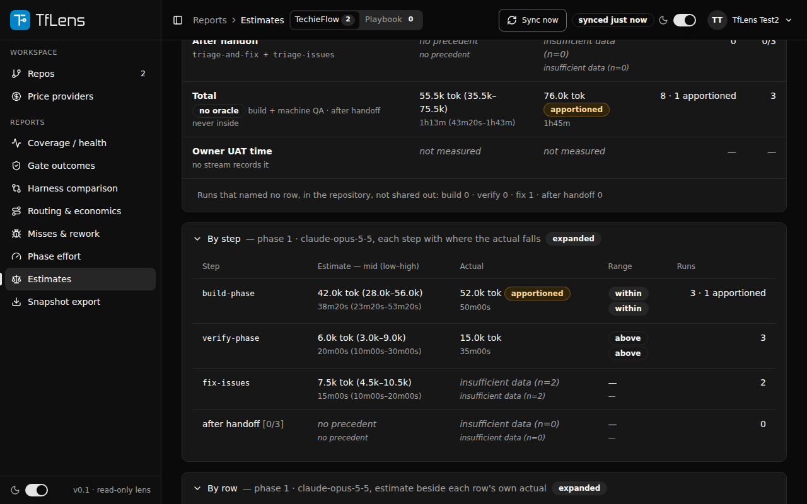
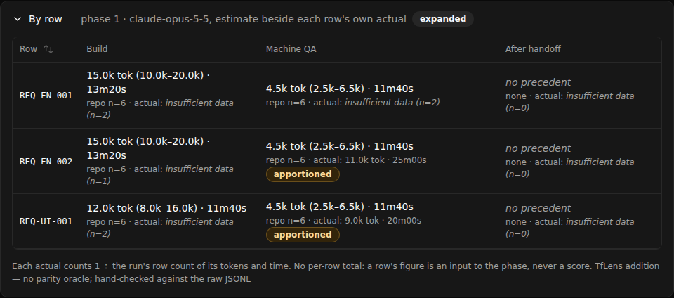

TfLens — Developer Guide (Phase 4: Estimates)
TfLens-P4-DevGuide.md| App | TfLens |
| Kind | app |
| Size | Large |
| Phase | 4 of 4 |
| Verified on | 2026-11-12 |
| Date | 2026-11-12 |
The phase 1 to 3 screens are mapped in TfLens-DevGuide.md; this guide holds what phase 4 added.
Architecture cheat-sheet#
flowchart LR
Page["Estimates.razor"] --> Rec["EstimateMetrics.ReconcileAsync"] --> Store["PostgresStore.ReadEstimatesAsync / ReadRunsAsync"] --> DB[("Estimate + Run tables")]
Export["SnapshotExporter"] --> Eng["MetricsEngine stage 8"] --> Rec
Export --> Disc["MissDiscovery.Compute"]
| Layer | Project or folder | What lives here |
|---|---|---|
| UI | src/TfLens/Components/Pages/Estimates.razor | the page, its cards, By step, By row; figures through FigureText |
| Figures | src/TfLens.Core/Metrics/EstimateMetrics.cs, OracleText.cs, MissDiscovery.cs | the reconciliation, the _k/_hms text, discovery cost |
| Data access | src/TfLens.Core/Storage/PostgresStore.cs | ReadEstimatesAsync, WriteChecklistAppAsync |
| Ingest | StreamParser.cs, Dedupe.cs, RepoSyncRunner.cs, TelemetryImportService.cs | the estimates stream; the checklist app name |
Roles and menu map#
| Role | Test user | Menu items and the screen each opens |
|---|---|---|
| Manager | user 1 or user 2 | Reports → Estimates (/estimates), after Phase effort |
Screen-by-screen code map#
Estimates (/estimates)#


Call chain: Estimates.razor:LoadAsync → EstimateMetrics.ReconcileAsync → PostgresStore.ReadEstimatesAsync + ReadRunsAsync → "Estimate", "Run" (joined to "UserRepo" by framework, never to each other)
| File and line | Function | Watch | Expected value |
|---|---|---|---|
src/TfLens/Components/Pages/Estimates.razor:458 | LoadAsync | vResult.Phases.Count | 3 for the Sample app; 0 for Sample empty and the Playbook |
src/TfLens/Components/Pages/Estimates.razor:480 | LoadAsync | vLoad == objLoadNumber | true; a stale overlapping load returns before assigning |
src/TfLens.Core/Metrics/EstimateMetrics.cs:100 | ReconcileAsync | vEstimates.Count | 44 for the Sample app |
src/TfLens.Core/Metrics/EstimateMetrics.cs:220 | ComputeCard | vCovered["build-phase"] | the rows whose build estimate had a figure |
src/TfLens.Core/Metrics/EstimateMetrics.cs:452 | ActualFor | vShare | hits ÷ reqs_count, capped at 1 |
src/TfLens.Core/Storage/PostgresStore.cs:288 | ReadEstimatesAsync | returned rows | only this user's, this framework's |
Calculations on this screen: EstimateMetrics.ComputeCard (latest forecast batch, covered rows, three parts, Total over build + verify + fix), ActualFor (apportioned share, MIN_N floor), OracleText.Kilo/Hms (OracleText.cs:35, :60; the framework script's rounding, half to even on the exact value).
Runtime: renders, signed in as user 2 with the Sample app seeded (tests/verify/seed/estimates.sh), light and dark, 1280 and 390; mockup comparison clean over 424 controls (2026-11-12).
Cross-cutting flows#
Discovery cost and the checklist app name (export, BRD-220)#
Call chain: SnapshotExporter → MissDiscovery.Compute → SnapshotJson.PerMissCost; sync RepoSyncRunner.RecordChecklistAppAsync / import TelemetryImportService → PostgresStore.WriteChecklistAppAsync → MetricsEngine per_repo[].app
| File and line | Function | Watch | Expected value |
|---|---|---|---|
src/TfLens.Core/Metrics/MissDiscovery.cs:37 | Compute | vMeasured.Count | misses whose discovery_scope is set and not not-measured |
src/TfLens.Core/Metrics/MissDiscovery.cs:98 | FixCostOf | vShare | 1 for a run's only fix; n when the run repaired n misses |
src/TfLens.Core/Export/SnapshotJson.cs:413 | PerMissCost | vRow | discovery, then fix beside it, never summed |
src/TfLens/Services/Sync/RepoSyncRunner.cs:208 | RecordChecklistAppAsync | vNames | the docs/ file names at the synced SHA |
src/TfLens.Core/Import/TelemetryImportService.cs:283 | CommitAsync | vChecklistApp | the name before -Checklist.md, or null for several |
src/TfLens.Core/Metrics/MetricsEngine.cs:280 | PerRepoFactsFor | vRepo.ChecklistApp | used only when no record names an app |
Configuration, logging, errors#
No setting changes any figure here (REQ-NFR-009, REQ-NFR-027). A failed docs/ listing logs a warning in RepoSyncRunner.cs:208 and never fails the sync.
Known issues#
- The app name is read only on a sync that finds new telemetry; an unchanged repository keeps its name until the next change (BRD-220).
- The export banner reads NOT QUOTABLE until the parity procedure is re-run against the framework script of 2026-11-08.